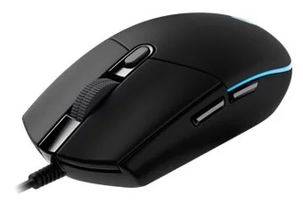

Мышь Logitech G102 Prodigy Black USB
Описание товара
Мышь G102 передает данные с частотой до 1000 раз в секунду, то есть в 8 раз быстрее, чем обычные мыши. Другими словами, компьютер практически мгновенно откликается на перемещение мыши или нажатие кнопок.
| Характеристики товара | |
| Разрешение сенсора мыши | 8000 dpi |
| Размеры (ШxВxД) | 62x38x117 мм |
| Вес | 85 г |
Подробное описание товара
Мышь проводная Logitech Gaming Mouse G102 Prodigy поможет вам выйти на лидерские позиции в процессе онлайн-игры, она станет вашей надежной помощницей в жарких виртуальных баталиях, поскольку все ее конструктивные особенности продуманы до мельчайших деталей. Из 6 имеющихся кнопок есть кнопка переключения разрешения сенсора, что весьма удобно, когда необходимо уменьшить или увеличить разрешение в зависимости от игровых задач. Датчик работает в режимах от 200 до 8000 dpi, гарантируя предельную точность и быстроту реакции при использовании Logitech Gaming Mouse G102 Prodigy. А также имеются программируемые кнопки, которые позволят вам не отвлекаться от игры на различные операции. Материалом покрытия мыши послужил матовый пластик, она удобно лежит в руке, как в правой, так и в левой, длина ее кабеля составляет комфортные 2 метра.